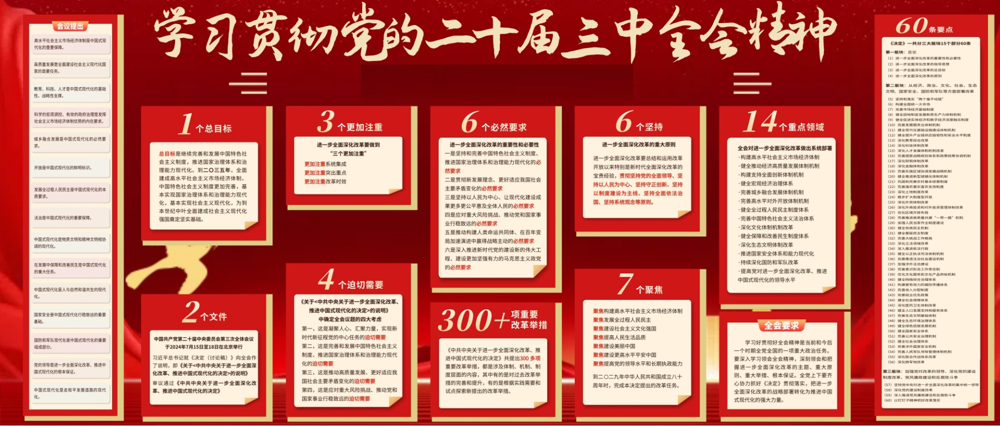
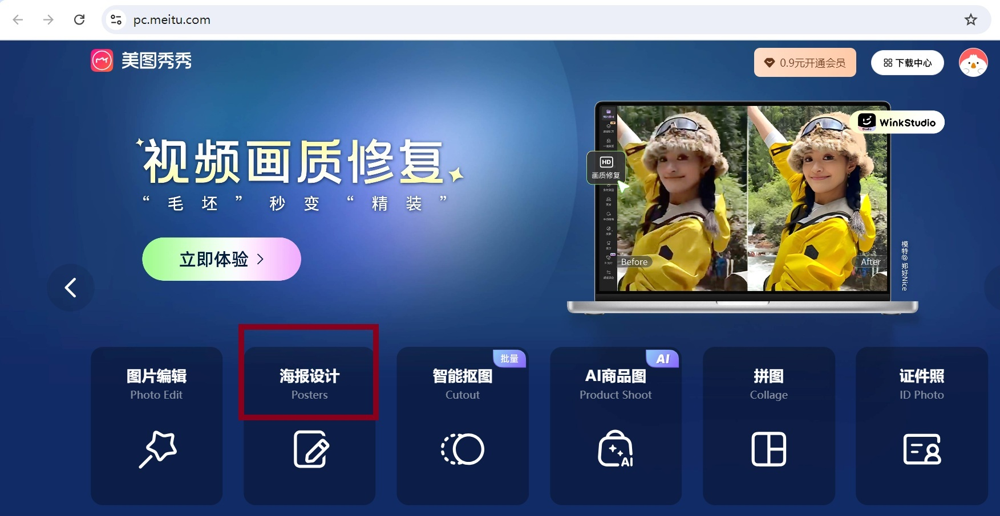
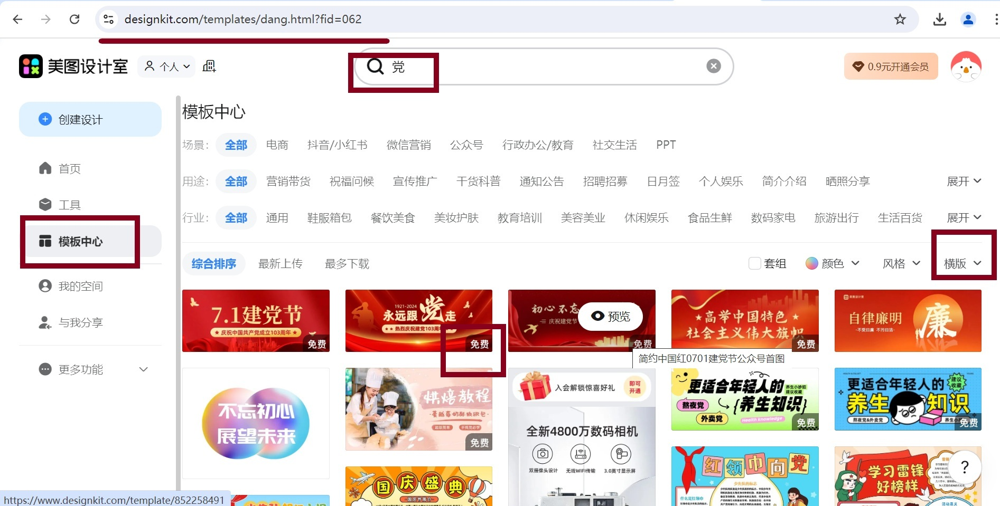
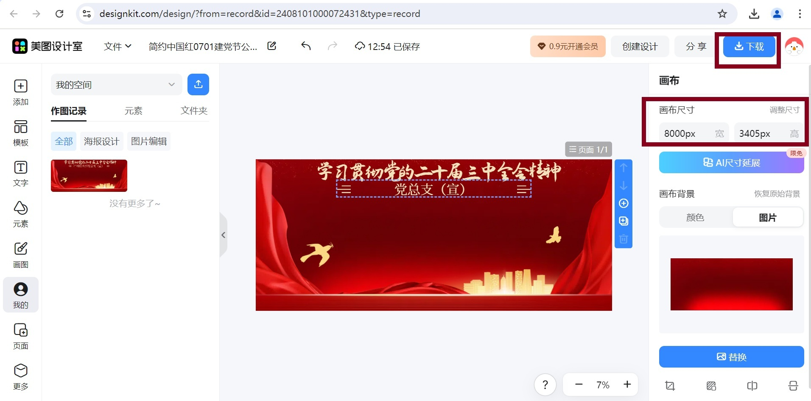

程序员（me）不懂投资（MeiQian）的一个很重要的原因，大概就是因为宁愿花大把的时间投入到一件一次性的工作上，也不愿意花个小钱（几块钱）来节省浪费的时间与精力。
很希望现在人人都趋之若鹜的大模型能完成制作党建板报这样的事情，至少这个工作完成起来就应该那么简单、高效，对任何人没有任何门槛。
方法
简单总结下这次的工作经验，方便日后自己或者其他人能参考，让这件事情对任何人没有任何门槛。
1、不花钱找一个底板模板
2、不花钱找素材
3、不花钱修图
效果图

步骤
一、使用美图秀秀下载一个免费的高清模板。
打开美图秀秀，使用免费账号登陆后，选择【海报设计】。
选择【模板中心】，输入关键字搜索，选择【横版】，挑选一个免费的模板。
编辑模板，修改文字，【画布尺寸】可以调整为最大尺寸，点击【下载】到本的。

这里最有价值的一点是，美图秀秀提供了画布尺寸，让我们可以获得一个高清的模板。非高清的模板随便百度搜一下能下载一大堆（诱饵），但是百度能搜到的高清模板（目的）基本上都是要花钱买的链接。
二、通过微信搜索素材。
打开电脑版微信，在【搜索】输入需要的党建主题，可以加上“一图”作为关键字进行搜索。
打开搜索到的文章，如果有觉得好的图片，可以点击文章，右键，选择【通过默认浏览器打开】，使用浏览器打开后，可以选择图片然后下载到本地。
效果图中用到的链接是这个：一图读懂 | 数说党的二十届三中全会精神 ，里面实际上包括了十几张小图，可以直接展现在板报上。
这里其实有几个技巧：
1、大家都需要宣传，微信上搜索比百度上搜索更容易找到好的素材。
2、因为现在很流行制作长图文，而且长图文所需要的素材质量一般也比较高，因此这类素材更有价值。
3、使用浏览器打开，而不是用微信的浏览器打开，是因为可以用比如F12等各类程序员熟悉的方式对页面进行调试获取其中的图片链接，这个看个人喜好。
三、使用inkscape修改图片。
- 下载inkscape，导入上面下载的模板和素材，然后组合成自己的板报。
很多人推荐用CDR（CoreIDRAW），应该是一款专业的用于一般制作宣传栏板报这类大图的软件，但是需要购买，否则只能试用。
在程序员都被称为新时代农民工的此刻，实际上要找到一款同样功能的开源免费的软件并不太难，主要得益于国外的开源以及国内的大批负责搬运的农民工。
作为新手第一次使用inkscape可能有些不习惯，我也没掌握多少技巧，所以这里只能做个广告，具体使用方式百度下应该不难。注意使用msi版本进行安装，会自动安装中文版。
总结
未曾遇过的难题总是一个接着一个，最近刚好看到几篇鸡汤，大意就是（按理解稍加整理）：认真努力对待每个难题，不要敷衍，跨越了再好好总结，让跨过的难题变成你的护城河。
所以又多了一个理由，再花了一点时间，把这次的工作写成博客。